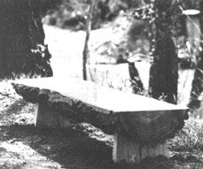
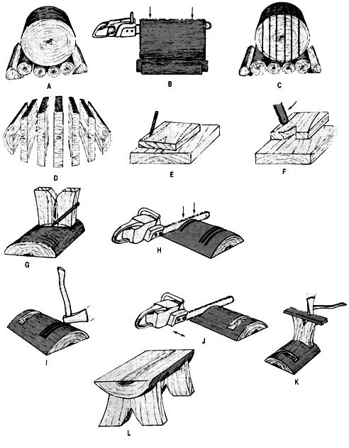
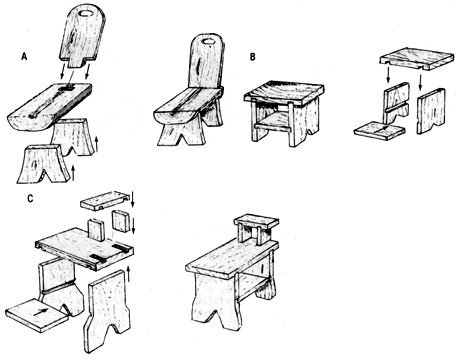
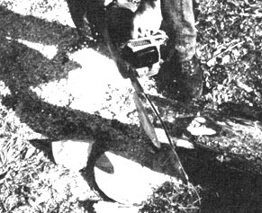
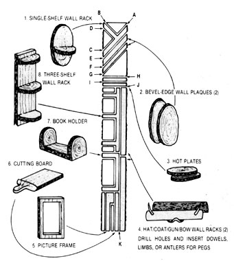

Come along as the author of The Chain Saw Craft Book explains how to create useful house hold furnishings, artful crafts, and extra income-all with your chain saw. He calls it . . .
The best "beginner" project is a twolegged, split-log bench that-with altered dimensions-can easily become anything from a footstool to a picnic table. Let's start with a dry, well-seasoned, crack-free log that's at least 17" in diameter and about an inch shorter than your saw's guide bar. [EDITOR'S NOTE: Many of the chain saw techniques in this article should not be attempted by less-than-expert sawyers.]
With your project log cut to length, elevate and brace it for ripping by supporting it on a mound of scrap wood, as shown in Fig. 1-A. Be sure that the supporting scraps run parallel to the project log (to avoid setting up a possible kickback situation), and that the block to be ripped is firmly seated and not wobbly.
Now you're set to produce the short slabs that you'll need for the projects that follow. For these crafts, the slabs should be between 1-1/4" and 2-1/2" thick. To rip, first eye down your saw to align the guide bar with one of the outside edges of the log. Now, holding the saw parallel to the edge of the log, begin the first ripping cut. This first, halfround edge slab should be at least 2" thick, since it will serve as the top of a bench or table. (If you're ripping a large-diameter log, you may find it necessary to shut the saw off, rebrace the project log on its supports, clean the accumulated saw chips out of the cut, then restart the saw and continue. As always, pa tience is a virtue.) In order to keep the thickness and bevel of the slabs uniform on the second and subsequent cuts, hold the bar parallel with the first cut (Figs. 1-B, 1-C, and 1-D).
After ripping the entire log into slabs, choose two flat pieces to serve as the bench's legs. Legs for stools, low benches, and chairs will need to be about 13" high, while end tables and larger benches will require 16" legs. Now decide on a design for the legs, work it out on paper, and transfer it to the first of the two slabs. (If you don't like my design, as shown in Fig. 1-E, feel free to invent one of your own.)
Next, lay the marked slab on a flat piece of elevated wood (a stump about two or three feet tall works beautifully), and brace it so that it can't slide around while you're cutting. This can be safely accomplished by using nothing but one of your booted feet as a clamp if you keep that foot well away from the action, work slowly so as not to force the cut, and keep your eyes on what you're doing. You can also brace the slab with three wooden dowels driven firmly into holes bored into the elevated platform.
Begin the cut at the end of the slab farthest from you, using a smooth, sweeping, indownback motion that draws the saw toward. you and off to one side, as shown in Fig. 1-F. Never try to cut in-forward-up: There's too much risk of inducing a guide-bar kickback situation. To execute a curved cut without executing yourself, trace along the pattern line with the saw, making the first cut no more than 1/4" deep, and repeat the process until the slab is cut completely through. You may have to stand the slab on its tip in order to clean out the V in the bottom of the leg, using the saw . . . or do it with a chisel and mallet.
Now use the first leg as a pattern for the second, and repeat the entire process exactly.
After both legs are cut, choose a half round slab for the seat (if you're building a bench) or top (if it's to be a table). Since it's unlikely that both legs came out exactly the same thickness, use the top edge of each leg as a pattern for its particular notch in the underside of the top (Fig. 1-G). With the notches marked, lay the half-round slab on a flat surface, and brace it as you did when you were cutting the legs.
When sawing the leg notches into the top, first make a "down" cut (Fig. 1-H) just inside each of the scribed lines, to a depth of no more than half the thickness of the slab. Next, make a series of parallel cuts, as close together as possible, between the two original, outside slots. Repeat exactly for the second notch. Now use a hammer or the back of a hatchet to knock the thin "wafers" of wood out of the notches, as in Fig. 1-I. To smooth out the ridges that will be left in the bottoms of the notches, "plane" your saw carefully from side to side along the bottoms of each notch, taking care to keep both of the notches the same depth (Fig. 1-J).
Before driving the legs into their slots, place them in position and eyeball the fit. If either leg is too wide for its notch, work it down a bit with a heavy wood rasp. To seat the legs, first place a piece of scrap wood across the bottom of each to act as a buffer, then use a hammer or some such to do the poundingin chores (Fig. 1-K). If a leg fits too loosely, you can always drive some thin wooden wedges between it and the sides of the notch to shim it up tight. If you wish, you can further secure the legs to the top with dowels (which is the most aesthetic method), wood glue, or even nails or screws.
With the bench (or table) completed, plane the top smooth with your saw, then use a rasp to complete the rough-finishing chores. But be careful not to overdo it; log furniture is supposed to look rugged. You may wish to sand the top surface a bit-then wipe the entire project clean and apply a finish that's appropriate for the use the piece will receive. For indoor furniture, natural wood that is lightly oiled is hard to beat.
And you're done.
With a bit of practice, a competent sawyer can knock this project out in just a few minutes. If this first item turns out to your liking, take a glance at Fig. 2, which shows several embellishments that can easily be added to what you've already got in order to make (A) a workbench with backrest, (B) a simple end table with a magazine shelf beneath, and (C) an end table with lamp shelf.
EDITOR'S NOTE: MOTHER plans to publish Barnacle Parp's New Chain Saw Guide, by Walter Hall. This revised version, even more comprehensive than the original, will be available in the spring; to reserve copies, send your name and address, along with the number of books you'd like held, to Mother's Bookshelp 105 Stoney Mountain Rd., Hendersonville,NC 28791. The price is $12.95 ($15.95 in Canada), plus $1.50 handling for one or two copies or $2.00 for three or more.
The Eight-Project Log
By stuying this diagram-and with the help of a small chain saw and a seasoned log 7' to 8' long and 10" to 12" in diameter-you can whip out these eight attractive and useful chain saw craft projects. In addition to the project log, you'll need two shorter logs from which to cut supports. Letter represent order of cuts.
|
 |
 |
 |
|
 |
 |
|